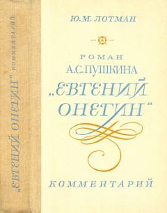

РАPushkinning «Evgeniy Onegin» romani uchun batafsil ilmiy izohlar va sharhlar.
Ushbu kitob taniqli olim Yu. M. Lotmanning A. S. Pushkinning «Evgeniy Onegin» romaniga yozgan ilmiy-tarixiy izohlarini o'z ichiga oladi. Nashr o'qituvchilar va kitobxonlarga asar matnini chuqurroq tushunish, o'sha davr muhiti, maishiy hayoti va tarixiy shaxslari bilan tanishish imkonini beradi.